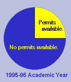
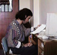
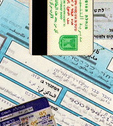
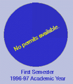

|
|

Palestinians have long been among the most educated citizens of the Arab world. Since the early 1970s Palestinian educators in the Palestinian territories have striven to provide equal access to education to all sectors of Palestinian youth—men and women from all parts of the occupied Palestinian territories and Israel, refugees, rich and poor alike. As universities developed, they performed a vital function in the integration of Palestinian society, allowing dialogue between different political and social groups, encouraging tolerance, mutual respect and the opportunity to practice democratic principles and to experience the vibrant life of a university setting.
In 1994 responsibility for education of Palestinians was transferred to the Palestinian National Authority as part of the political agreements reached between Israel and the Palestine Liberation Organization. The Council for Higher Education, founded in 1977, was incorporated into the new Ministry for Higher Education with responsibility to develop and expand the opportunities for higher education necessary for training and supporting a thriving, dynamic Palestinian society. In each accord that has been signed by the Israeli and Palestinian authorities, the parties have affirmed that the West Bank and Gaza shall be treated as one territorial unit and that a safe-passage route will be established to ensure free movement between the two districts.
Despite these positive developments, the harassment of Palestinian students, faculty and staff from the Gaza Strip who study, teach and work in Palestinian higher education in the Israeli-occupied West Bank has reached an all-time high. The permit system has been entrenched, rather than phased out, and the borders between the West Bank and Gaza, and Jerusalem and Israel have been fortified. Border closings instituted in the wake of attacks in Israeli cities, have neglected all aspects of Palestinian ecnomic and social life. Students have been targeted in particular for harassment and obstruction.
During the 1995-96 academic year, a student following the restrictions laid down by Israel would have been able to attend class for only 25 percent of the time. From 1996 to date, students adhering to the permit system would not have been able to atten ANY classes. Students who dare to violate the rules face harassment, arrest and detention, fines, and, in some cases, torture.

The West Bank and Gaza are separated by 100 km, a one-hour drive. Six of the eight Palestinian universities are located in the West Bank. Students choose to study at universities in the West Bank for a variety of reasons. Some disciplines are not offered in Gaza. Other disciplines have only recently been added to the course offerings and lack the facilities or expertise of some of the West Bank universities. Some students want to study at universities in the West Bank for personal reasons. Maybe they are looking for a chance to experience something different, or a difference in teaching approach or available resources. Maybe they want to study with a distinguished faculty member.
The same factors influence young people from Gaza that influence students all of over the world when they choose an institution of higher learning. Imagine saying to a student in Washington, DC, you may only go to school within the confines of the city, or to a student from Rome you may not travel to Venice. In this time when students from Holland , or France, or Greece may study anywhere in Europe, the desire for a student from Gaza to want to study in Ramallah does not seem too extraordinary.
Prior to 1996, approximately 1,300 Palestinians from Gaza were studying in West Bank institutions of higher learning. For many years the students experienced some difficulty moving back and forth to the university--especially when the Israeli military imposed town or house arrest on individual students, or curfews on towns or villages. In March 1993, however, Israel imposed a new kind of closure on the occupied Palestinian territories in an effort to guarantee the security of every Israeli through the collective restriction of movement of Palestinians. This move denied Palestinians with West Bank or Gaza identity cards access to Jerusalem and to the area (i.e. either the West Bank or Gaza) apart from their own.
From that time Israeli authorities have employed an increasingly restrictive permit system for controlling the movement of Palestinians, including students. At the outset, students must obtain two different kinds of permits, in addition to the magnetic identity card required for any male wishing to exit the Gaza Strip. Students need one permit to travel from Gaza to the West Bank (see map) and a second permit to reside in the West Bank for their studies. At regular intervals in recent years, Israeli authorities have canceled all student permits and ordered students to return to Gaza immediately. After the imposition of a so-called "closure", weeks or months pass during which Israeli authorities have refused to even accept or review application for student permits.

From March 1996 when all permits were canceled until January 1998, not one student from Gaza was permitted to resume their studies in the West Bank. In January 1998, a handful of permits were issued to Gaza students for a period of six months, which have now all expired without renewal. Students have spent months waiting, not knowing when they would be permitted to resume their studies. The situation during the 1995-96 academic year as a whole illustrates the problem.
end of part one